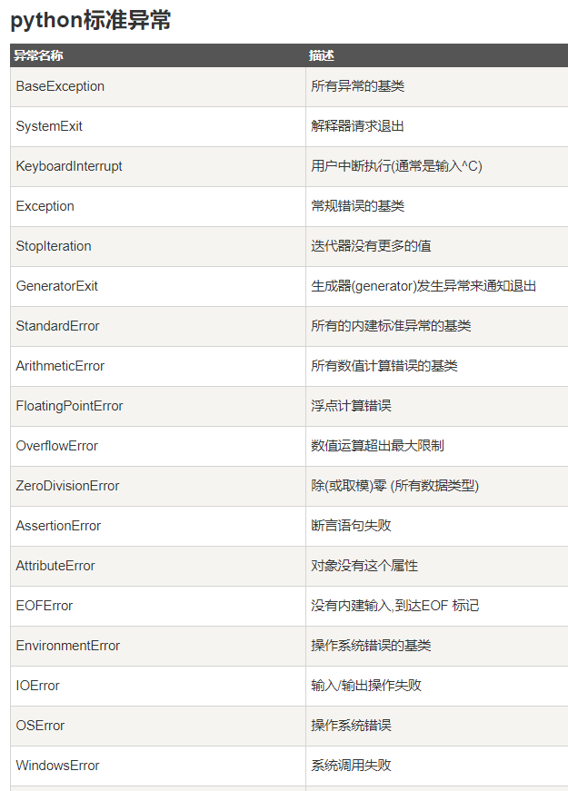

python 异常处理
什么是异常？
异常即是一个事件，该事件会在程序执行过程中发生，影响了程序的正常执行。
一般情况下，在Python无法正常处理程序时就会发生一个异常。
异常是Python对象，表示一个错误。
当Python脚本发生异常时我们需要捕获处理它，否则程序会终止执行。

try:
<语句> #运行别的代码
except <名字>：
<语句> #如果在try部份引发了'name'异常
except <名字>，<数据>:
<语句> #如果引发了'name'异常，获得附加的数据
else:
<语句> #如果没有异常发生
-----------------------------------------
try:
fh = open("testfile", "w")
fh.write("这是一个测试文件，用于测试异常!!")
except IOError:
print "Error: 没有找到文件或读取文件失败"
else:
print "内容写入文件成功"
fh.close()
------------------------------------------
使用except而不带任何异常类型
try:
正常的操作
......................
except:
发生异常，执行这块代码
......................
else:
如果没有异常执行这块代码
---------------------------------
使用except而带多种异常类型
try:
正常的操作
......................
except(Exception1[, Exception2[,...ExceptionN]]]):
发生以上多个异常中的一个，执行这块代码
......................
else:
如果没有异常执行这块代码
------------------------------
try-finally 语句
try-finally 语句无论是否发生异常都将执行最后的代码
try:
fh = open("testfile", "w")
fh.write("这是一个测试文件，用于测试异常!!")
finally:
print "Error: 没有找到文件或读取文件失败"
try:
fh = open("testfile", "w")
try:
fh.write("这是一个测试文件，用于测试异常!!")
finally:
print "关闭文件"
fh.close()
except IOError:
print "Error: 没有找到文件或读取文件失败"
当在try块中抛出一个异常，立即执行finally块代码。
finally块中的所有语句执行后，异常被再次触发，并执行except块代码。
参数的内容不同于异常。
---------------------------------
异常的参数
一个异常可以带上参数，可作为输出的异常信息参数。
# 定义函数
def temp_convert(var):
try:
return int(var)
except ValueError, Argument:
print "参数没有包含数字\n", Argument
# 调用函数
temp_convert("xyz");
触发异常
我们可以使用raise语句自己触发异常
raise语法格式如下：
def functionName( level ):
if level < 1:
raise Exception("Invalid level!", level)
# 触发异常后，后面的代码就不会再执
-----------------------------------
try:
正常逻辑
except Exception,err:
触发自定义异常
else:
其余代码
-----------------------------------
# 定义函数
def mye( level ):
if level < 1:
raise Exception,"Invalid level!"
# 触发异常后，后面的代码就不会再执行
try:
mye(0) # 触发异常
except Exception,err:
print 1,err
else:
print 2
用户自定义异常
通过创建一个新的异常类，程序可以命名它们自己的异常。异常应该是典型的继承自Exception类，通过直接或间接的方式。
以下为与RuntimeError相关的实例,实例中创建了一个类，基类为RuntimeError，用于在异常触发时输出更多的信息。
在try语句块中，用户自定义的异常后执行except块语句，变量 e 是用于创建Networkerror类的实例。
class Networkerror(RuntimeError):
def __init__(self, arg):
self.args = arg
----------------------------------
try:
raise Networkerror("Bad hostname")
except Networkerror,e:
print e.args